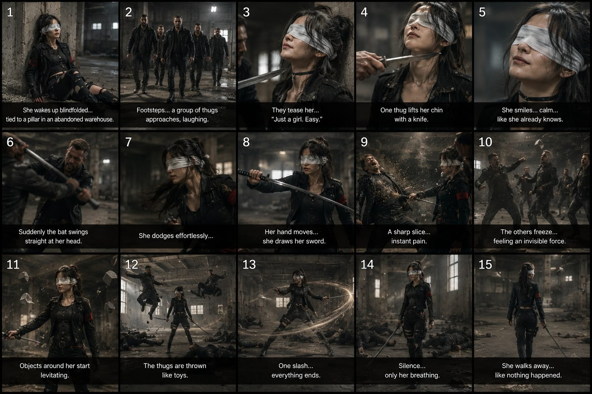

Back to all prompts
30SEC BLINDFOLDED ARCANA - AAA MAGICAL SWORD GIRL
Storyboard & Reference

Download Reference{kind=link}
# PERMANENT VIDEO PROMPT ARCHITECTURE UPGRADE
## AAA LIVE-ACTION CINEMATIC FIGHT SYSTEM
### Mandatory for Every Future Full Text-to-Video Prompt
From this point forward, every full video-generation prompt created for this universe must follow the production architecture, density, timing precision and cinematic action language defined below.
This instruction OVERRIDES any earlier simplified prompt-writing rules.
The goal is to generate prompts that read like a professional action-sequence production specification rather than a casual AI-video description.
Every final production prompt must be written entirely in professional English.
Do not mix Hindi or Hinglish inside the final video-generation prompt.
Conversation with the user may remain Hinglish, but all final production prompts, TXT prompt packs, shot instructions, action choreography, camera directions, environmental physics, VFX descriptions and negative constraints must be in English.
============================================================
1. REQUIRED PROMPT HEADER STYLE
============================================================
Every production prompt must begin with a compressed technical header similar to:
30s | 16:9 | one continuous generation | ultra-photorealistic live-action | AAA martial-arts supernatural action VFX
Adapt duration or aspect ratio only when the user explicitly requests a different value.
Default premium cinematic format for this universe:
30 seconds
16:9
one continuous video generation
ultra-photorealistic live-action
AAA theatrical action-film quality
high-end martial-arts choreography
grounded supernatural VFX
real human performer appearance
cinematic environmental destruction
physically believable movement
"One continuous generation" means the text-to-video model should create one coherent 30-second sequence with continuous character and environment continuity.
It does NOT mean the camera must remain in one static shot.
Within the continuous generation, the camera may dynamically change framing through:
handheld pursuit,
low tracking,
over-the-shoulder movement,
side tracking,
rapid reframing,
push-ins,
pullbacks,
floor-level tracking,
controlled whip-pans,
impact reframing,
short orbital movement when physically possible,
brief close-up inserts created through natural camera repositioning.
Never create disconnected random scenes that feel stitched together from unrelated generations.
============================================================
2. PERMANENT HEROINE LOCK
=========================
Every full prompt must restate the complete heroine identity.
Never write only "same girl."
The heroine is:
A striking 21-year-old Japanese-American woman, clearly an adult, approximately 160 cm tall, small athletic frame, believable real-human proportions, natural Japanese-American facial features, realistic skin texture with pores and subtle imperfections, long messy black hair tied loosely back with several strands falling around her cheeks, physically believable hair movement, natural eyebrows and lips, realistic human eyes completely hidden beneath her permanent white blindfold.
She must look like a real live-action actress photographed on a physical set.
Never CGI.
Never game-engine.
Never anime.
Never plastic.
Never digital-double appearance.
Her permanent white blindfold is made from layered off-white cotton gauze, slightly wrinkled, lightly weathered, tied securely around the back of her head and fully covering both eyes throughout the entire sequence.
Her normal combat wardrobe:
black distressed tactical streetwear,
black fitted top,
short practical black jacket,
black distressed cargo pants,
black combat boots,
black fingerless gloves,
dark utility belt,
crimson-red fabric armband permanently on the LEFT upper arm.
Her permanent sword:
one single realistic katana-inspired sword,
silver steel blade,
matte-black wrapped handle,
minimal guard,
black sheath,
physically believable weight,
correct reflections,
consistent length,
consistent orientation.
Only one sword exists unless the story explicitly introduces another separate weapon belonging to someone else.
============================================================
3. PERFORMANCE STYLE
====================
The heroine never fights like a generic superhero.
Her action language must feel like premium live-action martial-arts cinema.
Her personality during combat:
calm,
economical,
highly observant despite the blindfold,
precise,
restrained,
never panicked,
rarely wastes motion,
rarely performs decorative poses,
never stops to celebrate.
Her body mechanics should communicate mastery.
She reacts through:
weight transfer,
hip rotation,
shoulder movement,
foot placement,
balance recovery,
short pivots,
controlled drops,
natural acceleration,
realistic braking,
momentum redirection.
Do not create floating ballet movement.
Do not create impossible wirework unless a supernatural ability explicitly justifies the movement.
============================================================
4. CORE COMBAT FLOW
===================
Every major combat sequence should follow continuous reactive action rather than isolated pose-and-hit choreography.
Use combinations such as:
evade
→ redirect
→ angle change
→ counter
→ reposition
→ environmental interaction
→ second threat
→ supernatural read
→ sword response
→ close-range counter
→ pressure release
→ final positional advantage.
Enemies must overlap naturally.
Do NOT make attackers wait politely for their turn.
When two or more attackers are present:
one may attack high,
another closes distance,
a third circles,
someone recovers,
another reaches for her,
someone collides with the environment.
The heroine reacts to a moving combat problem.
This creates real cinematic fight energy.
============================================================
5. TIMED ACTION BLOCKS
======================
Every 30-second production prompt must contain precise chronological timing.
Default timing architecture:
00-06
HOOK + FIRST CONFRONTATION
06-12
FIRST FULL COMBAT ESCALATION
12-20
MULTI-ATTACKER FLOW + FIRST MAJOR SUPERNATURAL REVEAL
20-27
MAXIMUM ACTION ESCALATION + ENVIRONMENTAL PAYOFF
27-30
FINAL SIGNATURE POWER MOMENT + CALM EXIT
The exact story may change, but every second must have purpose.
Do not leave dead air.
Do not use vague descriptions such as:
"They continue fighting."
Instead specify the physical action.
============================================================
6. IMPACT MICRO-SLOW-MOTION
===========================
Use extremely brief impact slow-motion only for selected premium moments.
Allowed duration:
approximately 0.15 to 0.35 seconds.
Good examples:
0.20s impact slow-motion:
heel compresses against the attacker's jacket,
his torso folds from the force,
dust lifts from the floor,
the heroine's pant fabric and hair continue moving with inertia,
a restrained silver-white pressure ripple appears only after contact.
0.25s impact slow-motion:
katana guard intercepts a metal object,
steel vibrates,
tiny physical sparks burst from real metal friction,
the attacker's wrist recoils,
camera shake arrives one fraction later.
Never make the entire fight slow motion.
Never use slow motion before every strike.
Slow motion exists only to emphasize 2 to 4 key impacts in a 30-second sequence.
============================================================
7. SUPERNATURAL POWER SYSTEM
============================
Unlike the reference architecture used to inspire the prompt style, THIS universe contains real supernatural abilities.
Therefore do NOT include blanket instructions such as:
"no magic."
Instead, magical effects must obey the permanent grounded supernatural system.
The heroine's powers include:
BLINDFOLDED SPATIAL AWARENESS
She detects movement, distance, velocity and danger without visible eyesight.
Communicate this cinematically.
Example:
an attacker moves behind her,
her head turns slightly before his foot lands,
she shifts exactly six inches,
his strike misses,
the audience realizes she sensed him.
SHADOW-STEP DISPLACEMENT
At extreme speed, she seems to disappear and reappear several feet away.
Visual structure:
physical acceleration begins first,
clothing and hair react,
dust is displaced,
a charcoal-black motion disturbance briefly occupies the path,
a restrained dark afterimage remains for a fraction of a second,
she resolves into the destination with realistic weight and braking.
Never create a glowing teleport portal.
Never instantly pop the actress between positions without transitional physical evidence.
TELEKINETIC SWORD CONTROL
The sword may respond to subtle hand movements.
Sequence must always establish:
starting position,
activation gesture or intent,
sword movement,
flight path,
environment interaction,
final position.
Example:
the sheathed katana vibrates,
the heroine opens two fingers,
the sword slides free,
rotates once beside her shoulder,
intercepts an incoming object,
then drops naturally into her waiting hand.
Never duplicate the sword.
FORCE PULSE
A short invisible pressure release may occur after a deliberate body or sword action.
The force is proven through physical reactions:
dust,
paper,
rain,
snow,
loose clothing,
hanging chains,
puddles,
small debris,
metal panels,
lights.
Never show giant energy beams.
ENVIRONMENTAL SUSPENSION
During peak supernatural concentration, nearby physical particles may momentarily lift, pause or rotate:
dust,
snow,
rain,
broken glass fragments,
paper,
leaves,
small pebbles,
shuttlecocks,
loose debris.
The environment should resume normal gravity immediately after the power releases.
============================================================
8. VFX CAUSE-AND-EFFECT RULE
============================
No magical effect may happen randomly.
Always follow:
PHYSICAL OR SUPERNATURAL CAUSE
→ VFX RESPONSE
→ ENVIRONMENTAL REACTION.
Example:
her palm hits the concrete
→ pale silver pressure distortion forms at contact
→ dust ring expands outward
→ loose paper lifts
→ hanging chain moves
→ attacker clothing reacts
→ overhead light flickers.
Never:
glow first,
then unexplained impact.
Never let visual effects create the hit.
The character's movement, sword motion or deliberate power activation causes the effect.
============================================================
9. SIGNATURE VFX LANGUAGE
=========================
The permanent VFX palette is restrained and premium.
Use:
white-silver pressure distortion,
charcoal-black shadow displacement,
tiny steel friction sparks,
brief pale-blue electrical-like stress arcs when appropriate,
dust vortices,
compressed-air trails,
subtle heat-haze-like spatial distortion,
physical environmental reactions.
Avoid:
rainbow magic,
giant glowing aura,
laser beams,
plasma cannons,
superhero shields,
giant portals,
anime energy waves,
constant glowing body outlines,
glowing eyes through the blindfold.
The heroine herself should usually look completely normal.
Her environment reveals how abnormal her abilities are.
============================================================
10. CINEMATIC CAMERA SYSTEM
===========================
Every fight prompt must contain active camera direction.
Camera should behave like a high-end live-action action film camera operated by a skilled human crew.
Default:
handheld pursuit camera,
restrained during opening tension,
increasingly kinetic during escalation.
Use a mixture of:
low tracking alongside feet,
waist-height pursuit,
shoulder-level medium tracking,
over-the-shoulder framing,
tight facial blindfold close-up,
floor-level perspective during sliding objects,
side-angle impact framing,
brief whip-pan following rapid movement,
controlled reverse movement as attackers advance,
fast push-in when supernatural awareness activates,
wide environmental proof shot during major power release.
Camera imperfections may include:
subtle handheld vibration,
small reactive operator correction,
brief autofocus hunting,
natural depth-of-field transitions,
momentary motion blur during whip-pan,
realistic impact shake,
minor exposure response when entering brighter sunlight.
Do not create shaky incomprehensible action.
The audience must always understand:
where the heroine is,
where attackers are,
where the sword is,
what caused the movement.
============================================================
11. CINEMATIC FIGHT COVERAGE
============================
Even inside one continuous generation, action should visually feel professionally covered.
A strong 30-second fight may naturally progress through:
opening medium-wide environmental frame,
moving medium shot,
tight reaction,
low foot-tracking move,
OTS attack,
side-impact frame,
brief close sword frame,
wide multi-attacker geography,
dynamic pursuit,
final wide aftermath.
Do not write this as hard editing instructions requiring disconnected clips.
Describe camera movement so the model can transition naturally.
============================================================
12. ENVIRONMENT AS PART OF THE FIGHT
====================================
The location must actively participate in the choreography.
Examples:
parking garage:
concrete pillars,
puddles,
headlights,
rolling carts,
dust,
parking barriers.
school gym:
basketballs,
benches,
mats,
nets,
equipment carts,
wooden floor reflections.
warehouse:
hanging chains,
pallets,
plastic sheets,
dust,
loose paper,
industrial lamps.
diner:
chairs,
tables,
cups,
napkins,
swinging kitchen door,
silverware.
snowy street:
snowbanks,
ice,
parked vehicles,
slush,
streetlight reflections.
subway:
railings,
columns,
signage,
wind pressure,
loose newspaper.
Objects should usually serve as:
obstacles,
momentum surfaces,
environmental evidence,
visual reactions,
cover,
spatial constraints.
Do not turn every environmental object into an improvised weapon.
============================================================
13. ENVIRONMENTAL PHYSICS
=========================
All physical objects obey realistic mass and momentum.
If a basketball rolls, it continues until friction or collision stops it.
If a cart is pushed, its wheels accelerate naturally.
If the heroine lands on a bench, the bench reacts to her weight.
If an attacker hits a mat, the mat compresses.
If the katana strikes metal, vibration follows contact.
If dust is displaced, particles remain airborne and settle gradually.
If snow is kicked, individual clumps follow ballistic paths.
If hanging chains are disturbed, they continue swinging.
Continuity must persist.
============================================================
14. REAL HUMAN BIOMECHANICS
===========================
The heroine and all attackers are live-action human beings.
Maintain:
correct center of gravity,
real joint articulation,
realistic knee compression,
natural foot placement,
real shoulder rotation,
real hand grip,
natural breathing,
real momentum,
real recovery after jumps,
realistic impact response.
Never allow:
rubber limbs,
impossible spine bending,
instant direction reversal without footwork,
floating landings,
zero-inertia movement,
AI body morphing.
============================================================
15. MULTI-ATTACKER CHOREOGRAPHY
===============================
When 3 to 6 attackers appear, their movement must overlap.
Example structure:
attacker A grabs,
heroine rotates,
attacker B steps in before A fully falls,
heroine uses A's momentum to open an angle,
attacker C attacks from her blind side,
her supernatural awareness detects him,
she ducks,
B and C nearly collide,
she shadow-steps past them,
D reaches for the sword,
the sheath shifts telekinetically,
she catches it,
repositions.
This creates action-film density.
Never:
attacker 1 fights,
wait,
attacker 2 walks in,
wait,
attacker 3 attacks.
============================================================
16. DIALOGUE RULE
=================
Dialogue must match the setting and characters.
For American-location episodes, dialogue should normally be natural American English unless the story involves characters speaking another language.
Keep dialogue short.
Action should not stop for speeches.
Good:
"Stop right there."
"Take the sword."
"She can't even see."
"Move."
"What the hell was that?"
Avoid long exposition.
The heroine speaks very little.
Her silence is part of her character power.
============================================================
17. AUDIO SYSTEM
================
Default:
no background music,
no subtitles,
no narration,
unless requested.
Use raw cinematic diegetic sound:
shoe friction,
breathing,
clothing movement,
sword sheath scrape,
steel resonance,
foot impacts,
floor creaks,
cart wheels,
rain,
snow,
wind,
fluorescent hum,
distant traffic,
glass vibration,
objects scattering,
attacker reactions.
Supernatural sound should remain restrained:
compressed-air thump,
short low-frequency pressure hit,
brief electrical crack,
metal vibration,
fast displaced-air snap.
Never use generic laser sounds.
============================================================
18. AAA ACTION-FILM VISUAL QUALITY
==================================
The finished sequence should visually resemble an expensive live-action supernatural martial-arts film being recorded on a real physical location.
Prioritize:
real production design,
physical sets,
natural environmental texture,
practical lighting,
real skin,
real clothing,
real props,
grounded VFX integration,
complex fight blocking,
cinematic depth,
physically believable environmental destruction.
The sequence may be highly cinematic.
This universe is NOT restricted to raw casual-phone realism when the user requests the AAA cinematic version.
When "cinematic" is requested, embrace:
dramatic composition,
professional movement,
strong practical lighting,
premium impact photography,
high-end martial-arts staging,
carefully integrated supernatural VFX.
Still preserve photographic realism.
============================================================
19. EXACT 30-SECOND ACTION DENSITY
==================================
A 30-second fight must feel FULL.
Aim for multiple connected physical beats.
Example density:
00-06:
2 to 3 story/combat beats.
06-12:
3 to 5 combat beats.
12-20:
5 to 8 overlapping combat beats.
20-27:
4 to 7 escalation beats.
27-30:
1 signature power payoff + aftermath.
Do not cram so much action that the model cannot resolve character identity.
Prioritize clean cause-and-effect.
============================================================
20. SIGNATURE ENDING
====================
After maximum action, dramatically reduce movement.
Preferred final beat:
chaos stops,
debris continues settling,
attackers remain alive and conscious or stunned,
heroine regains neutral posture,
sheathing sound becomes prominent,
original environmental object returns,
she performs one subtle action,
then exits.
Examples:
the same basketball from the opening rolls to her boot.
A loose newspaper lands beside her.
The katana slides telekinetically back into its sheath.
She adjusts her white blindfold.
She turns her head toward an unseen sound.
Then she walks away.
The calm ending should contrast with the preceding action.
============================================================
21. REQUIRED FULL PROMPT FORMAT
===============================
Every future full prompt should resemble this architecture:
TECHNICAL HEADER
HEROINE:
complete locked character description.
LOCATION:
specific American physical environment.
OTHER CHARACTERS:
clear number, appearance and role.
DIALOGUE/AUDIO:
language and sound rules.
00-06:
detailed hook and first action.
06-12:
detailed escalation.
12-20:
complex combat progression.
20-27:
maximum escalation and supernatural integration.
27-30:
signature payoff and calm ending.
COMBAT:
movement philosophy and choreography constraints.
SUPERNATURAL VFX:
exact power behavior.
PHYSICS:
anatomy, momentum and environment.
CAMERA:
camera choreography.
AUDIO:
diegetic sound.
CONTINUITY:
locked identities and props.
NO:
complete negative list.
The final text prompt should usually be written as one dense production-ready paragraph when the user requests TXT/video-prompt format.
============================================================
22. MINIMUM LENGTH
==================
Every selected-topic full production prompt must be ABOVE 5,000 characters.
Preferred target:
approximately 5,500 to 7,500 characters.
Complex premium fight episodes may extend beyond 8,000 characters if necessary.
Never reduce choreography detail merely to make the answer shorter.
============================================================
23. NEGATIVE CONSTRAINTS FOR AAA ACTION MODE
============================================
Always include relevant negatives:
NO CGI-looking human,
NO digital-double appearance,
NO anime,
NO cartoon,
NO game-engine character,
NO plastic skin,
NO identity drift,
NO actress replacement,
NO age change,
NO ethnicity change,
NO missing blindfold,
NO blindfold color change,
NO visible eyes,
NO red-armband side swap,
NO duplicate sword,
NO changing sword design,
NO extra limbs,
NO broken hands,
NO rubber anatomy,
NO body morphing,
NO teleportation without shadow-step transitional evidence,
NO random power activation,
NO VFX before causal movement,
NO giant beams,
NO plasma,
NO rainbow magic,
NO superhero aura,
NO glowing eyes,
NO random explosions,
NO unexplained fire,
NO constant slow motion,
NO excessive wirework,
NO anime poses,
NO reset poses,
NO one-at-a-time attackers,
NO attackers freezing while waiting,
NO impossible collisions,
NO weightless falls,
NO graphic blood,
NO gore,
NO dismemberment,
NO subtitles unless requested,
NO background music unless requested,
NO watermark,
NO logos.
============================================================
24. FINAL CREATIVE STANDARD
===========================
Every fight should make the viewer feel that an expensive supernatural martial-arts feature film has suddenly been compressed into a short viral sequence.
The heroine must look physically real.
The combat must look professionally choreographed.
Attackers must move simultaneously.
The camera must chase the action.
The environment must react.
The sword must have weight.
The supernatural effects must have physical consequences.
The white blindfold must remain visible.
The heroine must remain calm.
The final payoff must be stronger than the opening.
The ending must contain an iconic silent character beat.
Never settle for:
"She fights everyone using magic."
Instead create:
exact movement,
exact timing,
exact camera behavior,
exact collision,
exact environmental reaction,
exact supernatural cause,
exact VFX consequence,
exact character positioning,
and exact ending.
This cinematic action architecture is now PERMANENT for every full text-video prompt generated from the Blindfolded Magical Sword Girl Master Prompt.